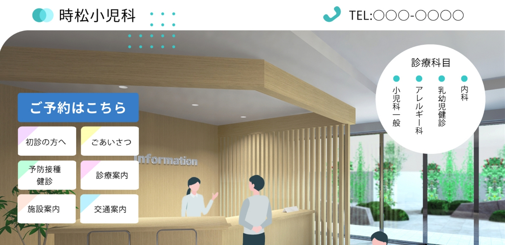
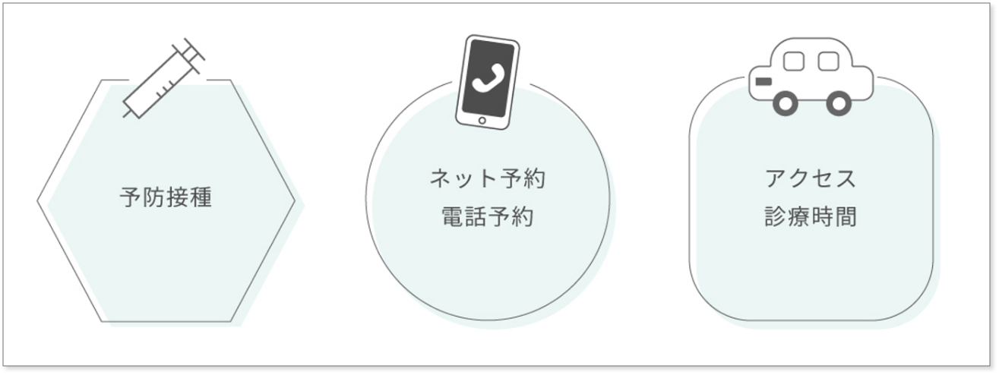
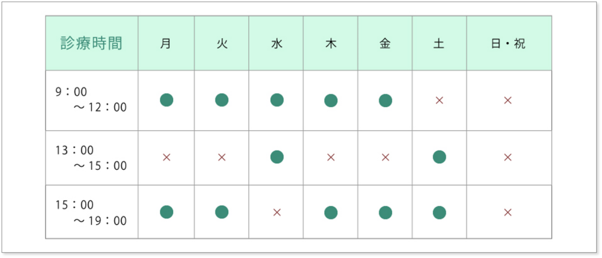
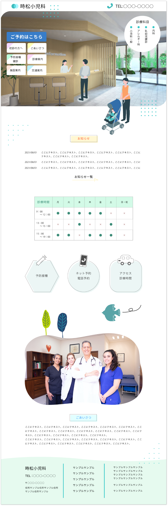

My works
WEBサイト
小児科のWEBサイトを作成しました。患者さんによっては緊急の場合もあるため、ファーストビューで電話番号と予約ボタンを設置しました。そのすぐ下には、こちらも緊急性の高いお知らせと診療時間を配置しました。
全体のカラーリングとしては安心感のあるグリーンを採用し、また小児科ということもあり、かしこまったものではなく丸みのある鳥のイラストを使用することでやさしい印象のサイトを目指しました。
使用ソフト：Photoshop、illustrator、HTML、CSS
制作時間：2日間

▲Adobe illustratorで注射器、モバイル、車をつくりました。イラスト風にすることで親しみやすくなり、黒ではなくグレーを使っているので重たい印象になるのを避けました。

▲診療時間は●と×がぱっと見で区別できるようにそれぞれ色分けしました。余白も少し多めにとり、シンプルで見やすい時間表にしています。こちらもサイトのイメージカラーであるグリーンを使用し、オリジナリティーを出しています。
